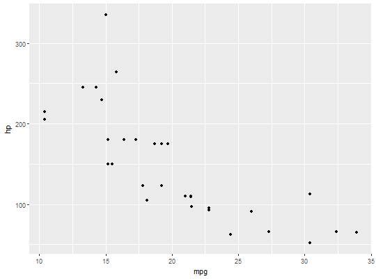
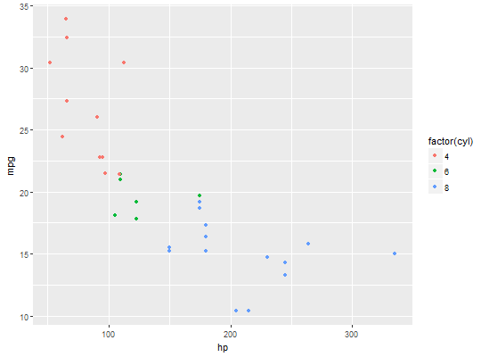

ggloop() mimics ggplot() by accepting both a data frame and
mappings, returning a plot - or plots in this case. The main difference is
that ggloop() accepts vectors for aesthetics and returns a list or
nested list of ggplot plots.
ggloop(data, mappings = aes_loop(), remap_xy = TRUE, remap_dots = FALSE, gg_obs = TRUE, ..., environment = parent.frame())
mapping from ggplot().x and y vectors
specified in aes_loop(). See details below for more on remapping
behavior.... vectors specified in
aes_loop(). See details below for more on remapping behavior.ggplot()'s ....ggplot()'s environment.ggloop() makes use of aes_loop, which is meant to mimic
aes from ggplot2. Because of this, the remapping arguments are
supplied to ggloop instead of aes_loop().
The first remapping argument, remap_xy can take three values:
TRUE = The default behavior. All unqiue combinations of
x and y are generated. This means that if a variable (i.e.
mpg) is supplied in both x and y, then no mapping will
have x and y variables that are the same (i.e. x -> mpg;
y -> mpg will not ever happen). Likewise, no unordered pair duplicates will
happen (i.e. x -> mpg; y -> cyl and x -> cyl; y -> mpg will be
treated the same).
FALSE = If x and y vectors are not the same
length, then the shorter of the two will be recycled. Recycling is similar to
mapply()'s recycling.
NA = If x and y vectors are not the same length,
then the shorter of the two will have NA assigned to the missing
elements. These are meant to act as placeholders during the wrangling
operations (extracting and grouping the aesthetics), and will be taken out
before the final list of mappings is sent to ggloop().# 1. Return all possible x-y combinations. plots <- ggloop(data = mtcars, mappings = aes_loop(x = mpg:carb, y = mpg:carb)) names(plots)#> [1] "x.mpg_y.cyl" "x.mpg_y.disp" "x.mpg_y.hp" "x.mpg_y.drat" #> [5] "x.mpg_y.wt" "x.mpg_y.qsec" "x.mpg_y.vs" "x.mpg_y.am" #> [9] "x.mpg_y.gear" "x.mpg_y.carb" "x.cyl_y.disp" "x.cyl_y.hp" #> [13] "x.cyl_y.drat" "x.cyl_y.wt" "x.cyl_y.qsec" "x.cyl_y.vs" #> [17] "x.cyl_y.am" "x.cyl_y.gear" "x.cyl_y.carb" "x.disp_y.hp" #> [21] "x.disp_y.drat" "x.disp_y.wt" "x.disp_y.qsec" "x.disp_y.vs" #> [25] "x.disp_y.am" "x.disp_y.gear" "x.disp_y.carb" "x.hp_y.drat" #> [29] "x.hp_y.wt" "x.hp_y.qsec" "x.hp_y.vs" "x.hp_y.am" #> [33] "x.hp_y.gear" "x.hp_y.carb" "x.drat_y.wt" "x.drat_y.qsec" #> [37] "x.drat_y.vs" "x.drat_y.am" "x.drat_y.gear" "x.drat_y.carb" #> [41] "x.wt_y.qsec" "x.wt_y.vs" "x.wt_y.am" "x.wt_y.gear" #> [45] "x.wt_y.carb" "x.qsec_y.vs" "x.qsec_y.am" "x.qsec_y.gear" #> [49] "x.qsec_y.carb" "x.vs_y.am" "x.vs_y.gear" "x.vs_y.carb" #> [53] "x.am_y.gear" "x.am_y.carb" "x.gear_y.carb"# [1] "x.mpg_y.cyl" "x.mpg_y.disp" "x.mpg_y.hp" "x.mpg_y.drat" # [5] "x.mpg_y.wt" "x.mpg_y.qsec" "x.mpg_y.vs" "x.mpg_y.am" # [9] "x.mpg_y.gear" "x.mpg_y.carb" "x.cyl_y.disp" "x.cyl_y.hp" # [13] "x.cyl_y.drat" "x.cyl_y.wt" "x.cyl_y.qsec" "x.cyl_y.vs" # [17] "x.cyl_y.am" "x.cyl_y.gear" "x.cyl_y.carb" "x.disp_y.hp" # [21] "x.disp_y.drat" "x.disp_y.wt" "x.disp_y.qsec" "x.disp_y.vs" # [25] "x.disp_y.am" "x.disp_y.gear" "x.disp_y.carb" "x.hp_y.drat" # [29] "x.hp_y.wt" "x.hp_y.qsec" "x.hp_y.vs" "x.hp_y.am" # [33] "x.hp_y.gear" "x.hp_y.carb" "x.drat_y.wt" "x.drat_y.qsec" # [37] "x.drat_y.vs" "x.drat_y.am" "x.drat_y.gear" "x.drat_y.carb" # [41] "x.wt_y.qsec" "x.wt_y.vs" "x.wt_y.am" "x.wt_y.gear" # [45] "x.wt_y.carb" "x.qsec_y.vs" "x.qsec_y.am" "x.qsec_y.gear" # [49] "x.qsec_y.carb" "x.vs_y.am" "x.vs_y.gear" "x.vs_y.carb" # [53] "x.am_y.gear" "x.am_y.carb" "x.gear_y.carb" plots$x.mpg_y.hp + ggplot2::geom_point()# 2. Add an additional aesthetic (facet) to plots. plots2 <- ggloop(data = mtcars, mappings = aes_loop( x = c(disp, hp, wt), y = mpg, color = factor(cyl))) sapply(plots2, names)#> color.factor(cyl) #> [1,] "x.disp_y.mpg" #> [2,] "x.hp_y.mpg" #> [3,] "x.wt_y.mpg"# color.factor(cyl) # [1,] "x.disp_y.mpg" # [2,] "x.hp_y.mpg" # [3,] "x.wt_y.mpg" plots2$`color.factor(cyl)`$x.hp_y.mpg + ggplot2::geom_point()# A look at remap_xy's other two behaviors: # 3. remap_xy = NA # The longer vector will go "unpaired" after the shorter vector # runs out of elements. plots3 <- ggloop(data = mtcars, mappings = aes_loop(x = c(mpg/disp, mpg/hp, mpg/cyl, mpg/gear), y = c(hp, disp)), remap_xy = NA) names(plots3)#> [1] "x.mpg/disp_y.hp" "x.mpg/hp_y.disp" "x.mpg/cyl" "x.mpg/gear"# [1] "x.mpg/disp_y.hp" "x.mpg/hp_y.disp" "x.mpg/cyl" "x.mpg/gear" # 4. remap_xy = FALSE # The longer vector will be "paired" with the shorter vector using # recycling (similar to R's internal recycling, i.e. mapply()). plots4 <- ggloop(data = mtcars, mappings = aes_loop(x = c(mpg/disp, mpg/hp, mpg/cyl, mpg/gear), y = c(hp, disp)), remap_xy = FALSE) sapply(plots4, names)#> x.mpg/disp_y.hp x.mpg/hp_y.disp x.mpg/cyl_y.hp x.mpg/gear_y.disp #> [1,] "data" "data" "data" "data" #> [2,] "layers" "layers" "layers" "layers" #> [3,] "scales" "scales" "scales" "scales" #> [4,] "mapping" "mapping" "mapping" "mapping" #> [5,] "theme" "theme" "theme" "theme" #> [6,] "coordinates" "coordinates" "coordinates" "coordinates" #> [7,] "facet" "facet" "facet" "facet" #> [8,] "plot_env" "plot_env" "plot_env" "plot_env" #> [9,] "labels" "labels" "labels" "labels"# [1] "x.mpg/disp_y.hp" "x.mpg/hp_y.disp" "x.mpg/cyl_y.hp" "x.mpg/gear_y.disp"